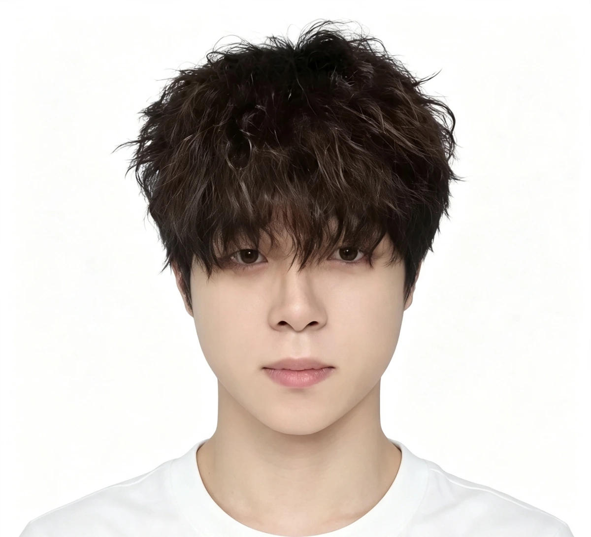

FEATURED FILM / 精选主推01 — NOVEMBER 02
NOVEMBER 02
11月2日 · AI 创作练习
HELLO, I'M CHEN ZHANRONG
以设计为帆，让创意涌动。
我是陈展荣。专注电商视觉与产品表达，
把产品的价值，变成看得见的设计。
01 / AI FILM COLLECTION
让灵感，进入下一帧。
从创意练习到产品表达，
用 AI 探索影像的更多可能。
11月2日 · AI 创作练习
更多 AI 视频与动态作品
02 / SELECTED WORKS
作品，是最好的介绍。
从产品主图到完整的视觉呈现，
让每一个细节，都服务于产品本身。
所有图片均选自个人作品集 / 2026
03 / ABOUT ME
设计有逻辑，表达有温度。

拥有 7 年设计工作经验，其中 6 年聚焦跨境电商设计。熟悉亚马逊主图、A+ 页面、产品精修与场景表达，也参与包装设计、展会海报及淘宝店铺视觉制作。
在平面设计与三维渲染之外，持续探索 AI 场景图与 AI 视频的运用，将不同工具融入创作过程。
2023.06 — 至今01
美工设计师
亚马逊主图与 A+ 页面 / 产品渲染 / 包装设计 / 展会海报 / 淘宝详情页
2021.06 — 2023.0102
美工设计师
亚马逊主图与 A+ 制作 / 产品精修 / 产品说明书
2020.11 — 2021.0503
美工
店铺视觉 / 活动页面 / 产品图片优化 / 宝贝详情设计
04 / WHAT I DO
有想法，也有实现它的能力。
从静态画面，到动态表达。
工具是手段，好的呈现是目的。
主图设计、A+ 页面、产品精修、店铺详情与活动页面，让产品信息清晰呈现。
通过三维渲染、产品摄影与场景图制作，呈现材质、结构与使用氛围。
包装盒、展会海报、产品说明书与品牌平面物料，保持视觉表达的一致性。
探索 AI 场景图、AI 视频与音乐制作，为创意寻找更多可能。
HAVE A PROJECT IN MIND?
保持好奇 · 持续创造下一个好作品，从一次交流开始。